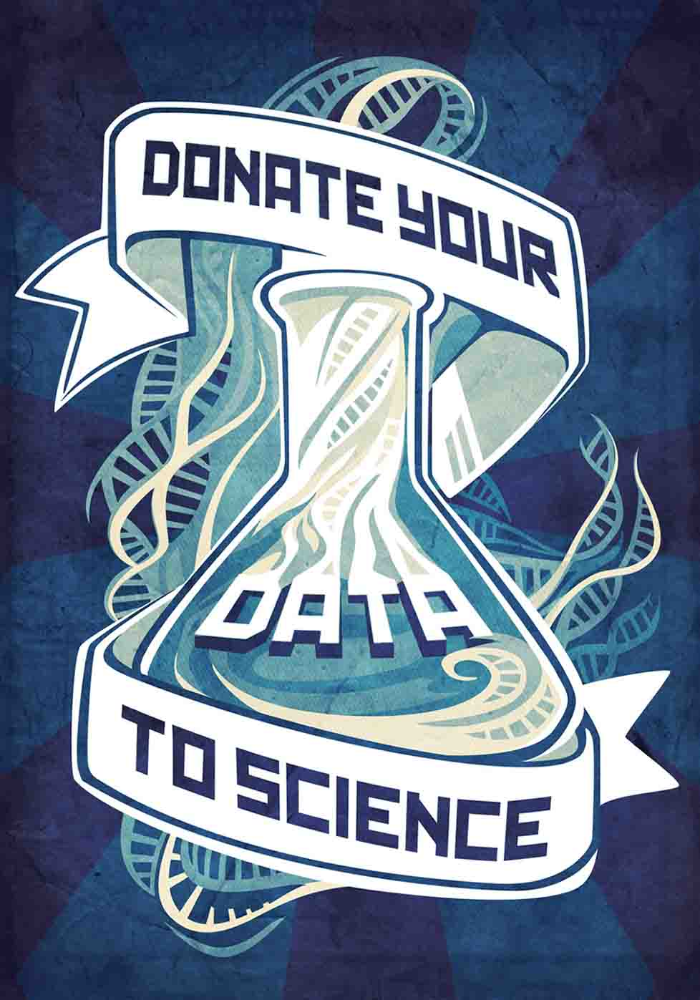

Did you know that you can contribute to scientific and medical research by swiping just a few cells from your mouth, skin, and gut? It's a painless little gift with big impact potential.
For insights into populations, scientists are collectively mapping the DNA (genetic code) and human microbiome (bacterial communities) from the bodies of thousands of living people to discover the origins of disease and health.
If you share your biological data from your saliva, skin, mucus, and, er, solid waste, it will be pooled with data from other human donors.
To find a way to participate, contact the clinical trials and research programs at your nearest hospital or search online for "human genome" or "microbiome" and "research."
Science, medicine, and the future of humanity will benefit. Your individual privacy will not be compromised. Give a few cells: it doesn't hurt.
